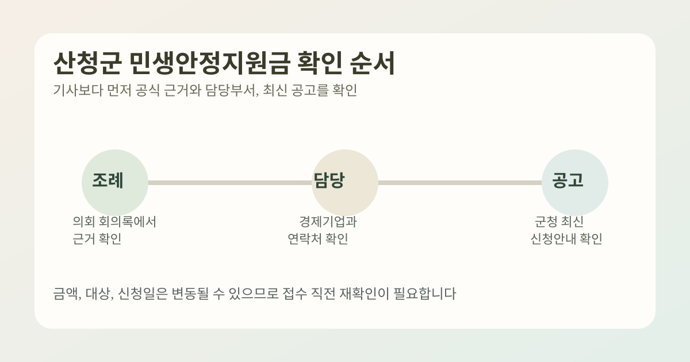

산청군 민생안정지원금을 찾는 분들은 대개 “언제 신청하나”, “얼마를 받나”, “어디서 확인하나”를 한 번에 알고 싶어 합니다. 그런데 이런 지역 지원금은 기사 한 줄보다 공식 공고, 조례 근거, 담당부서 안내를 같이 봐야 덜 헷갈립니다.
이 글은 2025년 12월 1일 산청군의회 산업건설위원회 회의록, 2025년 12월 8일 산청군의회 본회의 회의록, 그리고 현재 공개된 산청군 담당업무소개 페이지를 바탕으로 정리했습니다. 지역 지원금의 지급 시기, 금액, 신청 방식은 공고에 따라 달라질 수 있으니 접수 직전에는 반드시 최신 군청 안내를 다시 확인하세요.

1. 현재 공식 페이지에서 먼저 확인되는 것은 무엇인가요?
2025년 12월 1일 산청군의회 산업건설위원회 회의록에는 산청군 민생안정지원금 지원 조례안이 심사된 내용이 공개돼 있습니다. 검토보고에서는 이 조례안이 재난 또는 급격한 사회경제적 변화 등으로 어려움에 처한 군민의 생활안정과 지역경제 활성화를 위한 지원 근거라고 설명합니다.
또한 2025년 12월 8일 산청군의회 본회의 회의록에는 같은 조례안이 본회의 안건으로 상정되고 원안가결된 내용이 확인됩니다. 즉, 현재 공식적으로 먼저 확인되는 것은 지원 근거 조례와 관련 행정 체계입니다.
2. 실제 문의나 확인은 어디로 보면 되나요?
산청군 공식 담당업무소개 페이지에는 경제기업과 지역경제담당 주무관 업무로 민생안정지원금 업무 지원이 공개돼 있습니다. 같은 페이지에는 055-970-6803 번호도 함께 표시됩니다.
즉, 세부 접수 일정이나 지급 방식이 기사마다 다르게 보일 때는 군청 공고만 기다리기보다 담당부서 공지와 연락처를 먼저 확인하는 편이 정확합니다.
3. 기사에서 본 금액이나 신청 시작일을 바로 믿어도 될까요?
지역 지원금은 언론 보도가 먼저 나오더라도, 실제 접수 시작일과 대상 기준은 공식 공고문에서 확정되는 경우가 많습니다. 산청군 민생안정지원금도 검색량은 빠르게 늘고 있지만, 신청일·지급 방식·대상 범위는 최신 군청 공지를 우선해야 합니다.
특히 금액, 지급 수단, 세대 기준, 사용 기한처럼 바뀌기 쉬운 항목은 기사 제목만으로 단정하지 않는 편이 좋습니다.
4. 지금 단계에서 확인하면 좋은 순서
- 산청군청 또는 산청군의회 공식 페이지에서 민생안정지원금 관련 최신 공고를 찾습니다.
- 조례 근거와 본회의 통과 여부를 확인합니다.
- 경제기업과 지역경제담당 안내와 연락처를 확인합니다.
- 신청 대상, 세대 기준, 지급 수단, 사용 기한이 공고문에 적혀 있는지 봅니다.
- 기사에서 본 금액이나 날짜가 공식 공고와 일치하는지 마지막으로 대조합니다.
5. 이런 항목은 특히 다시 봐야 합니다
- 세대주 신청인지, 개인별 신청인지
- 지급 수단이 현금인지 지역화폐인지 상품권인지
- 기준일 이전 산청군 주민등록 요건이 있는지
- 대리 신청 가능 여부와 준비 서류
- 신청 기간 이후 추가 접수나 이의 신청이 가능한지
6. 한 번에 요약하면
- 산청군 민생안정지원금은 조례 근거와 군청 공고를 함께 봐야 하는 지역형 정보입니다.
- 2025-12-01 산업건설위원회 회의록과 2025-12-08 본회의 회의록에서 관련 조례안 심사·가결 내용을 확인할 수 있습니다.
- 산청군 공식 담당업무 페이지에는 민생안정지원금 업무 지원과 연락처가 공개돼 있습니다.
- 금액, 지급 방식, 접수 일정은 바뀔 수 있으므로 최신 공고 재확인이 필수입니다.
자주 묻는 질문
Q. 지금 바로 신청 페이지가 열려 있나요?
이 글 작성 시점에는 조례 근거와 담당부서 정보 확인이 우선입니다. 실제 접수 가능 여부는 산청군 최신 공고를 다시 확인해야 합니다.
Q. 기사에서 본 금액이 확정인가요?
지역 지원금은 공고문 기준이 우선입니다. 기사에서 본 금액이나 일정은 공식 안내와 다를 수 있으니 접수 직전에 다시 확인하세요.
Q. 어디에 문의하면 가장 빠른가요?
산청군 담당업무소개 페이지에 공개된 경제기업과 지역경제담당 연락처와 군청 공지사항을 함께 보는 방법이 가장 안전합니다.
공식 링크
- 산청군의회 2025-12-01 산업건설위원회 회의록
- 산청군의회 2025-12-08 본회의 회의록
- 산청군 담당업무소개
- 산청군 군정홍보
- 정책 · 생활정보 카테고리로 이동
- 전체 글 목록 보기
산청군 민생안정지원금은 지역 예산과 공고 일정에 따라 달라질 수 있습니다. 신청이나 지급을 앞두고 있다면 위 공식 페이지의 최신 공지와 안내문을 다시 확인하세요.